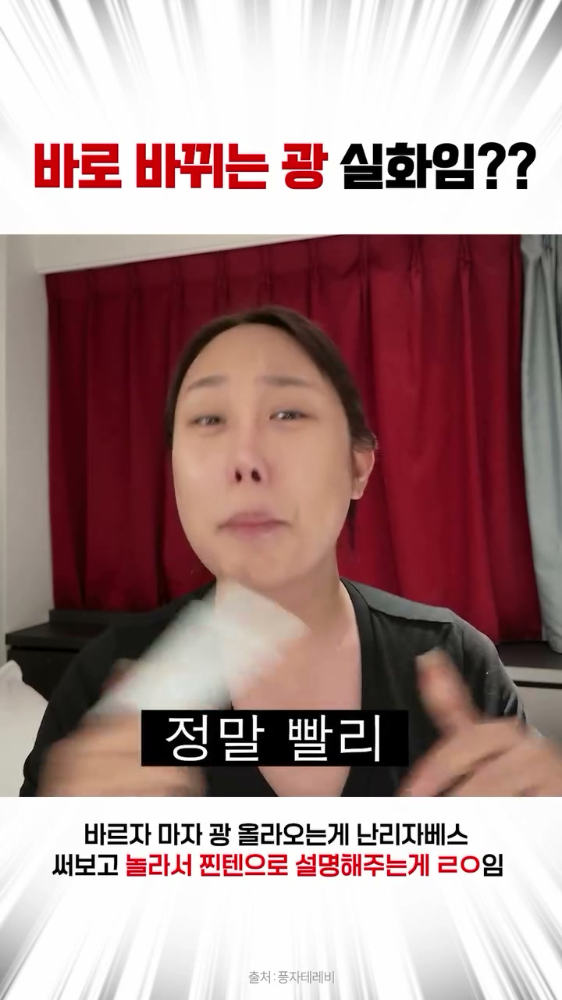
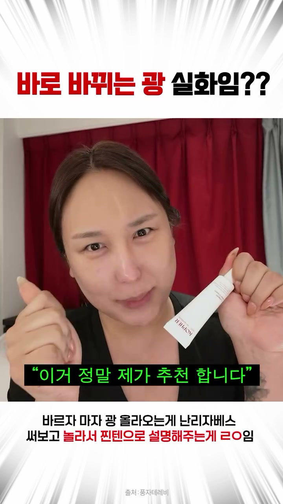
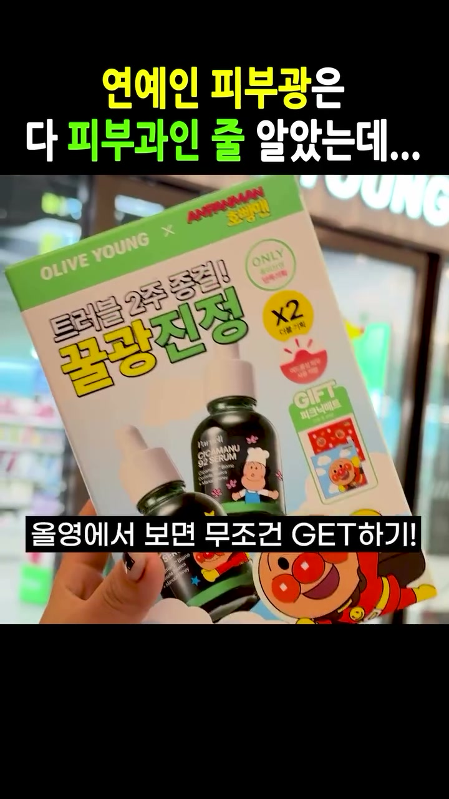
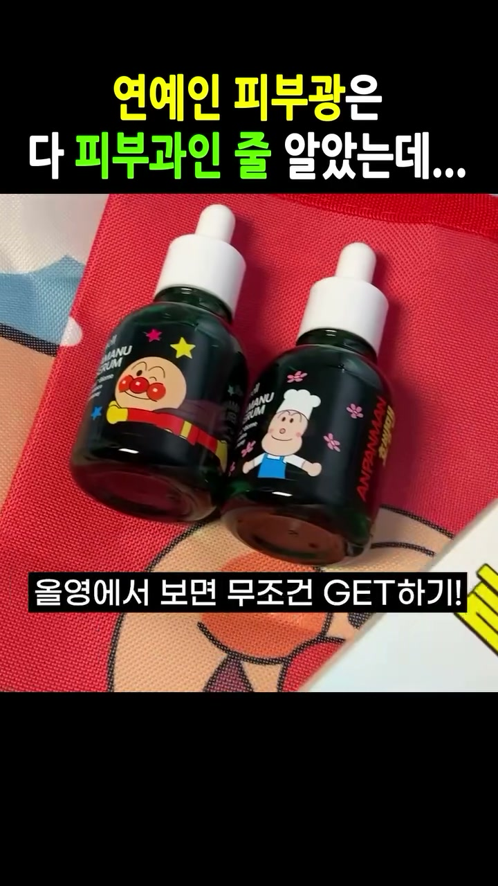
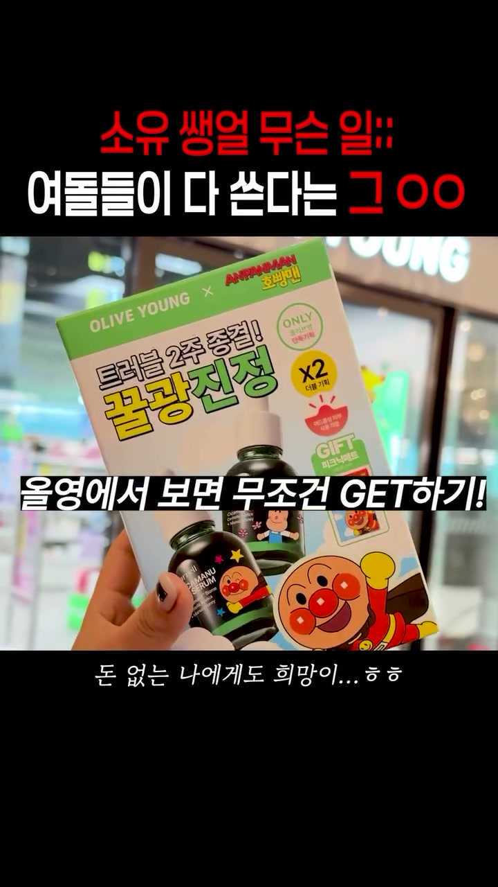
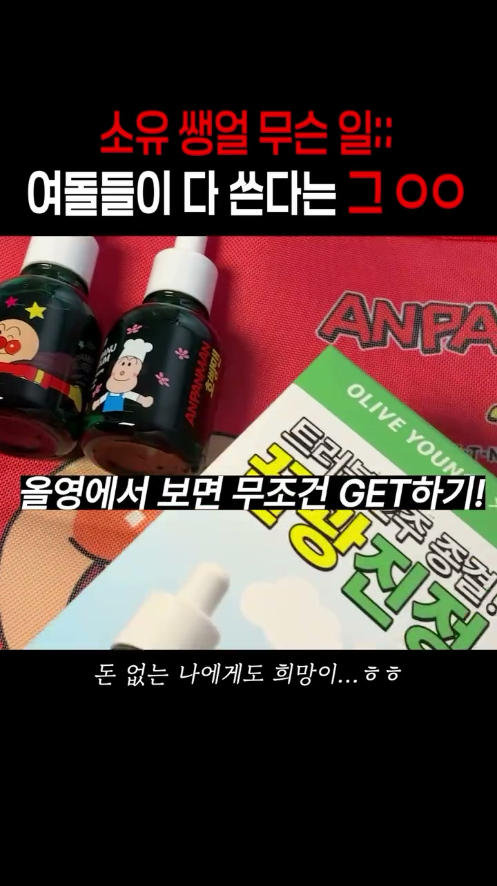
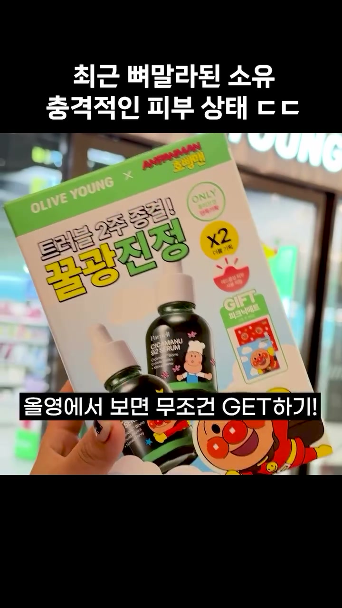
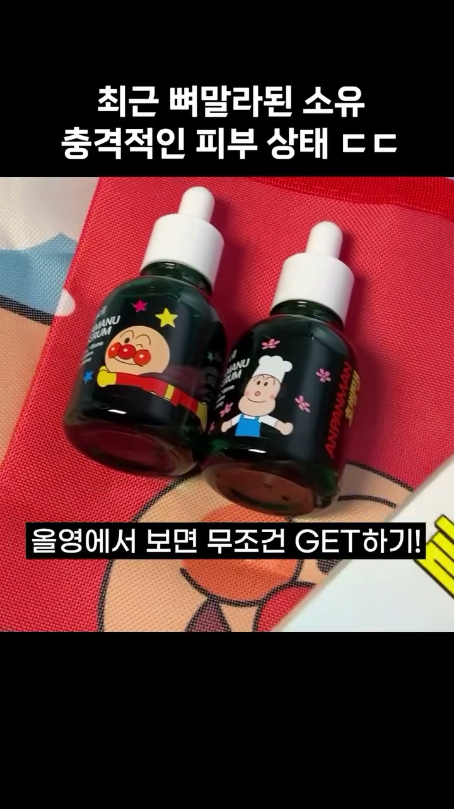
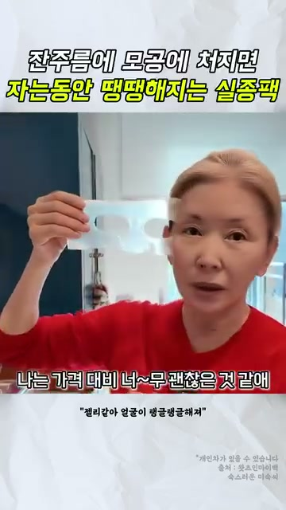
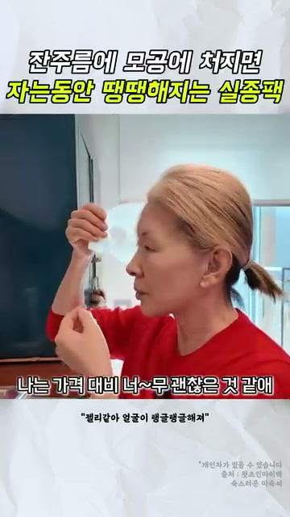

근접 사례를 기준 충족 또는 고성과 확정으로 올리지 않는다. 영화 요약·행사 소개는 숫자 통과 목록에 남기되 연예인 제품 광고 예시에서는 제외한다.
공유·저장 확인 기준
공유·저장은 앱 화면에서 읽은 실측값과 측정일을 함께 표시한다. 미확인은 0건으로 계산하지 않는다.
메타 신규 광고는 장면을 확인했지만 공유·저장 미확인이다. 활성 표시·집행 기간만으로 고성과라고 판정하지 않는다.
컷 선정과 성과 검증은 구분한다. 추가 조사 12건에는 비뷰티·광고 미확인·제외 후보의 판단 기록도 포함된다. 공유+저장당 비용은 계정 정가를 나눈 참고값이며 실제 집행가가 아니다.
전체 레퍼런스 중 별도 나레이션은 몇 편인가?
현재 카드 40건 전부를 분모로 집계했다. 시간 점유율이 아니라 나레이션이 들어간 사례의 비율이다. 비뷰티·광고 미확인 참고 사례도 기존 목록에 있는 그대로 포함한다.
판정 방법: 음성 모델 분석 + 기존 대본 교차검토. 아래 있음·없음은 AI 분석상 판정이며, 사람이 전편을 직접 청취해 확정한 결과가 아니다.
별도 나레이션 있음12 / 40건30.0%
별도 나레이션 없음12 / 40건30.0%
음성 판정 미확인16 / 40건40.0%
판정 가능한 24건 중 12건(50.0%)이 AI 분석상 별도 나레이션 사용 사례다. 이 수치를 전체 40건의 확정 사용률로 읽지 않는다. 전체 대비 AI 분석상 사용 비율은 30.0%이며, 미확인 16건의 결과는 아직 반영되지 않았다.
원본 대사 → 별도 나레이션 → 원본 대사 교차형: 10건 / 전체 40건(25.0%). 원본 대사에는 연예인뿐 아니라 어머니·진행자 등의 대사도 포함한다. 나레이션이 있다는 것만으로 교차형에 넣지 않는다.
동일 본편 중복을 제외하면 · 집계 방법
확인된 동일 본편 중복 2건을 제외한 38개 본편: AI 분석상 있음 10 · 없음 12 · 미확인 16. 전체 대비 AI 분석상 사용 26.3%, 판정 가능 22건 중 사용 45.5%. 아직 확인되지 않은 중복까지 제거한 수치는 아니다.
소유의 Dd2phx-v52N·Dd6K5ABzUZ-는 Dd0y31Gyrgh와 같은 본편으로 묶었다. 계정별 게시물 비율에서는 각각 1건이며, 본편 비율에서만 제외했다.
판정 방법: 확보된 원본의 음성 모델 분석 + 기존 대본 교차검토. 사람이 전편을 직접 청취해 확정한 결과로 표현하지 않는다. 구체적인 확인 수준과 판단 근거는 각 카드에 기록했다. 원본 대화의 다른 출연자·제작진 목소리, 본인 발언을 다른 화면 위에 이어 붙인 편집, 자막만 추가된 편집을 자동으로 별도 나레이션으로 세지 않는다.
일부 미확인 결과로 ‘거의 모든 광고가 나레이션을 사용한다’고 단정하지 않는다. 사용 빈도는 구매 성과나 나레이션의 효과를 증명하지 않는다.
전체 40건 중 끝 구간 AI 분석 17건 · 미확인 23건. 원본 첫 3초와 마지막 최대 12초, 끝 0.4초 전·1.5초 전 프레임을 대조했다. 아래 엔딩 유형은 마지막 화면 기준이며, CTA는 음성·자막을 함께 본 별도 항목이다.
김가연 엔딩의 근거는 연예인 활용 사례에서 고른다. 메디큐브는 비연예인 제품 시연이므로 제품 촬영 구도 참고로만 보관한다. 한혜진의 제품 화면에는 구매 나레이션·가격 안내가, 카디비의 기기 화면에는 검색 요청이 있어 ‘제품만 놓고 종료’와 다르다.
전체 조사 기록의 화면 유형 · 비연예인·예능 포함, 연예인 광고 사용률 아님
손 + 제품(얼굴 없음) 6건인물 + 제품 4건인물 증언 4건제품 단독 2건기타 마무리 1건
분석한 17건의 마지막 구간에서 구체 행동을 요청하는 CTA 9건 · 제품 안내 1건 · 추천 1건 · 명시적 CTA 없음 6건 · CTA 미확인 0건. 마지막 제품 컷만 보고 CTA 유무를 결정하지 않는다. 비광고·광고 여부 미확인 사례도 기존 조사 목록에 포함되어 있다.
각 카드의 ‘어떻게 끝나는가’를 열면 실제 끝 프레임·마지막 음성·상하단 문구·훅 회수 방식을 함께 볼 수 있다. 원본 관찰과 우리 제작 제안을 구분했다. 음성·글자 전사는 모델 판독이며, 이 분석만으로 해당 마무리가 성과 원인이라고 결론내리지 않는다. 판단·수정 기록 ↗
정가 환산 비용 단순 순위 10편 · 500원 미충족 포함
20만원 이상 계정·판독 확실한 기존 표본의 순위다. 순위에 들었다는 이유로 500원 기준 충족 또는 고성과 확정으로 분류하지 않는다.
40–52초 · 별도 나레이션 연예인 피부는 비싼 관리만 하는 줄 알았는데 결국 피부도 꾸준히 챙기는 게 답인가봄... 올영에서 보면 무조건 GET하기!
AI 분석상 엔딩 · 손 + 제품(얼굴 없음)어떻게 끝나는가 · 실제 끝 컷·대사·CTA
끝 0.4초 전 · 원본 52.8초끝 1.5초 전 · 원본 51.7초
마지막 전개 연예인 피부광의 비결로 꾸준한 관리를 짚으며 호빵맨 콜라보 세럼 기획세트와 증정품을 소개하고 올리브영 구매를 권장한다.
마지막 음성 · 모델 전사 올영에서 보면 무조건 GET하기!
끝 화면 상단 문구 연예인 피부광은 다 피부과인 줄 알았는데...
끝 화면 하단 문구 올영에서 보면 무조건 GET하기!
기타 화면 문구·로고 OLIVE YOUNG x ANPANMAN 호빵맨, 트러블 2주 종결! 꿀광진정, ONLY 올리브영 단독기획, X2 더블기획, GIFT 피크닉매트
마지막 행동·화면 올리브영 매장 앞에서 호빵맨 콜라보 파넬 시카마누 세럼 기획세트 패키지를 손에 들고 있는 모습
CTA 원문 · 구매 제안 / 음성 + 화면 문구 올영에서 보면 무조건 GET하기!
첫 3초 훅 연예인 피부광은 다 피부과인 줄 알았는데... / 소유 피부 무슨 일이야...
훅을 어떻게 회수하는가 · 분석 연예인의 피부광 비결이 비싼 피부과인 줄 알았으나 꾸준한 홈케어 세럼 제품 사용 및 올리브영 구매 권유로 자연스럽게 연결됨.
원본 마지막 최대 12초의 음성·화면·자막을 함께 분석했다. 제품 화면이라는 이유만으로 CTA가 없다고 판단하지 않는다. 마지막 음성 전사 신뢰도: 높음. AI 영상·음성 분석이며 사람이 전체 원음을 직접 청취해 확정한 결과는 아니다.
우리 적용안 · 제작 제안, 원본 발언 아님 앞에서 사용·선택의 이유를 설명한 뒤 손에 든 제품과 구입 장소 또는 안내 문구를 함께 보여주는 안. 손+제품 사진만 떼어내지 않고 직전 결론과 안내 음성을 같이 연결한다. 안내는 실제 판매 조건이 정해진 뒤 별도 음성·자막으로 작성한다.
10/27 서치폰: 공유 378·저장 319 = 697. 10/26 게시. 공개 목록 조회 93,900. 서로 다른 측정시각의 수치를 나눠 반응률로 계산하지 않음.
컷·자막·선정 판단 펼치기
장면 순서 0–3.5초 다른 인물이 얼굴을 만지며 호평하고 풍자가 더 주겠다고 답함 → 3.5–14.7초 정면 설명·기미 관리 이야기 → 14.7초 이후 제품 제시 → 약 19.5–29초 피부 광 접사·도포 → 사용 경험과 추천. 첫 8초 0.5초 간격 프레임과 자동 전사 대조.
자막·음성 상단 고정은 ‘바로 바뀌는 광 실화임??’, 하단 고정은 써보고 놀라는 반응을 강조. 움직이는 자막은 대화를 따라간다. 자동 전사상 0–3.5초 대화와 이후 직접 설명이 중심이며 별도 해설이 핵심인 구성은 아니다.
판단 근거 구매 설명보다 먼저 다른 사람의 사용·호평을 배치하고, 광이라는 눈에 보이는 관심사를 고정 문구로 계속 유지한다. 작동 이유에 대한 편집 가설이며 유지율·매출 인과효과는 미확인.
김가연 적용 김가연에게 실제 사용 직후 얼굴을 보는 컷, 옆 사람이 반응하는 컷, 제품을 건네는 컷을 받는다. 시럽 광고의 1초대 접사와 합치는 것은 신규 조합이다. 이 풍자 영상이 첫 1초에 기미를 지우는 증거는 아니다.
확인 범위 프레임·자동 전사·공유저장 확인
AI 분석상 나레이션 없음 · AI 분석상 교차형 아님
음성 판정 근거 펼치기
영상 시작부터 끝까지 동일한 출연자의 현장 대화 및 직접 제품을 설명하는 음성만 이어지며, 제3자의 편집된 광고 나레이션이나 TTS 음성은 전혀 존재하지 않습니다.
확인 수준: 전체 영상·원음의 AI 분석 · 사람의 직접 청취 아님
구간은 모델이 추정한 근삿값으로, 정확한 편집 타임코드가 아니다.
0–3초 · 원본 대화 진짜 좋다. 그래. 이거 내가 더 줄게.
3–57초 · 원본 대화 언니들 이거 진짜 오늘 잘 들어야 돼요.
AI 분석상 엔딩 · 인물 증언어떻게 끝나는가 · 실제 끝 컷·대사·CTA
끝 0.4초 전 · 원본 57.1초

끝 1.5초 전 · 원본 56.0초

제품을 들고 추천하는 직전 구간; 실제 마지막 프레임과 구분 · 원본 52.0초
마지막 전개 52초에 제품 튜브를 들고 추천한 뒤, 마지막에는 제품을 내리고 얼굴과 말로 “정말 빨리 지금”을 강조하며 구매를 재촉한다.
마지막 음성 · 모델 전사 정말 빨리 지금
끝 화면 상단 문구 바로 바뀌는 광 실화임??
끝 화면 하단 문구 바르자 마자 광 올라오는게 난리자베스 써보고 놀라서 찐텐으로 설명해주는게 ㄹㅇ임
기타 화면 문구·로고 화면 내 발화 자막: 지금 / 출처 : 풍자테레비
마지막 행동·화면 마지막 57.07초 증거 프레임에는 인물 얼굴과 손만 보이며 제품 튜브는 보이지 않음. 정면으로 몸을 가까이하며 “지금”이라고 강조한다.
CTA 원문 · 구매 제안 / 음성 + 화면 문구 그러니까 좀 빨리 쟁이셔야 돼 정말 빨리 지금
첫 3초 훅 상단 자막 '바로 바뀌는 광 실화임??' 및 '야 이거 진짜 좋더라' 발언
훅을 어떻게 회수하는가 · 분석 초반에는 다른 사람들과 함께 제품 사용 후 감탄하는 장면으로 흥미를 유도하고, 후반에는 인물이 직접 제품을 들고 빠른 품절을 경고하며 바로 구매(쟁이기)하도록 행동을 유도함
원본 마지막 최대 12초의 음성·화면·자막을 함께 분석했다. 제품 화면이라는 이유만으로 CTA가 없다고 판단하지 않는다. 마지막 음성 전사 신뢰도: 높음. AI 영상·음성 분석이며 사람이 전체 원음을 직접 청취해 확정한 결과는 아니다.
우리 적용안 · 제작 제안, 원본 발언 아님 김가연의 실제 사용 발언을 마지막에 남기는 안. 말이 끝날 때까지 얼굴을 유지하고 제품 컷 삽입 시점을 앞쪽으로 옮겨 비교한다. 안내는 실제 판매 조건이 정해진 뒤 별도 음성·자막으로 작성한다.
판단 근거 놀라는 표정과 문구는 일치하나 공유저장449로 더 낮다. 웃긴 반응이 있다는 이유로 성공한 광고라고 분류하지 않는다.
확인 범위 공유181·저장268=449 · 계정·장면 일치. 상단은 그리드/앱 대조, 광고 여부 미확인.
AI 분석상 나레이션 없음 · AI 분석상 교차형 아님
음성 판정 근거 펼치기
전 구간 39.0초를 4초 단위로 끝까지 확인했다. 쟁점이던 4.6–7.0초는 제품명 ‘투엑스 인텐시브 투엑스 크림’을 읽는 한 구절로, 구간 음성 단독 판정에서 앞뒤와 같은 현장 녹음의 출연자 발화로 분류됐고 화면도 제품을 든 출연자 쪽으로 이어진다. 이 구간의 음역대는 다른 출연자 발화(24.4–27.0초 등)의 범위 안이며, 영상 어디에도 3인칭 해설 문장은 없다. 처음 화면 포함 분석만 이 구절을 별도 음성으로 봤으므로 확신도는 중간으로 둔다.
확인 수준: 전 구간 4초 단위 음성 단독 판정 + 구간별 프레임·입 모양 대조 + 자동 전사 + 구간별 음역대·잡음 측정
출연자의 원본 인터뷰 음성과 편집자가 추가한 제3자 여성 나레이션이 교차하여 사용되었습니다. 원본 현장 음성과 상품/프로모션을 설명하는 해설 음성의 음색 및 울림이 명확하게 구별됩니다.
확인 수준: 전체 영상·원음의 AI 분석 · 사람의 직접 청취 아님
구간은 모델이 추정한 근삿값으로, 정확한 편집 타임코드가 아니다.
0–3초 · 원본 대화 20kg를 제가 감량을 한 거예요
3–8초 · 별도 나레이션 자기관리 빡세기로 유명한 소유! 요즘 쌩얼 피부 상태 충격적이라는데
8–11초 · 원본 대화 얼굴에 아무것도 안 한 거야 지금? 얘 뭐야 물광 피부네
12–18초 · 별도 나레이션 급격하게 살 빠지면 얼굴 처져 보이거나 푸석해지기 쉬운데 소유 피부는 탄력이랑 광이 미쳤음
18–19초 · 원본 대화 홈케어로 많이 하고 있고
19–30초 · 별도 나레이션 뭐 쓰나 하고 봤더니 매일 챙겨바르는 세럼이 있다고
30–33초 · 원본 대화 여러 번 덧발라도 밀리거나 답답함 없이 흡수가 엄청 잘돼요
34–38초 · 별도 나레이션 트러블 진정에도 도움되고 푸석한 피부에 수분감을 채워주고
38–40초 · 원본 대화 쌩얼인데도 피부가 반짝반짝
41–52초 · 별도 나레이션 연예인 피부는 비싼 관리만 하는 줄 알았는데 결국 피부도 꾸준히 챙기는게 답인가봄
AI 분석상 엔딩 · 손 + 제품(얼굴 없음)어떻게 끝나는가 · 실제 끝 컷·대사·CTA

끝 0.4초 전 · 원본 52.8초

끝 1.5초 전 · 원본 51.7초
마지막 전개 연예인 피부 관리법 궁금증에서 시작해 파넬 호빵맨 콜라보 세럼 기획세트와 증정품 피크닉매트를 소개하며 올리브영 구매를 권유하며 마무리된다.
마지막 음성 · 모델 전사 올영에서 보면 무조건 겟해봐!
끝 화면 상단 문구 연예인 피부광은 다 피부과인 줄 알았는데...
끝 화면 하단 문구 올영에서 보면 무조건 GET하기!
기타 화면 문구·로고 OLIVE YOUNG X ANPANMAN 호빵맨 트러블 2주 종결! 꿀광진정 ONLY 올리브영 단독기획 X2 더블기획 GIFT 피크닉매트
마지막 행동·화면 올리브영 매장 전면을 배경으로 한 인물이 손에 파넬 시카마누 92 세럼 호빵맨 콜라보 기획세트 패키지 상자를 들어 보이는 모습
CTA 원문 · 구매 제안 / 음성 + 화면 문구 올영에서 보면 무조건 GET하기!
첫 3초 훅 연예인 피부광은 다 피부과인 줄 알았는데... 상단 자막과 연예인 피부 언급 영상으로 호기심 유발
훅을 어떻게 회수하는가 · 분석 연예인의 매끈한 피부 비결이 단순 피부과 시술이 아닌 꾸준한 홈케어 제품(시카마누 세럼) 덕분임을 연결하여 올리브영 단독 기획세트 구매로 유도함. (추론: 피부 관리에 관심 있는 소비자의 구매 욕구를 자극)
원본 마지막 최대 12초의 음성·화면·자막을 함께 분석했다. 제품 화면이라는 이유만으로 CTA가 없다고 판단하지 않는다. 마지막 음성 전사 신뢰도: 높음. AI 영상·음성 분석이며 사람이 전체 원음을 직접 청취해 확정한 결과는 아니다.
우리 적용안 · 제작 제안, 원본 발언 아님 앞에서 사용·선택의 이유를 설명한 뒤 손에 든 제품과 구입 장소 또는 안내 문구를 함께 보여주는 안. 손+제품 사진만 떼어내지 않고 직전 결론과 안내 음성을 같이 연결한다. 안내는 실제 판매 조건이 정해진 뒤 별도 음성·자막으로 작성한다.
20–28초 · 원본 대화 마누카꿀이 들어있어서 굉장히 쫀득한 편이에요. 수분감이 꽉 차는 느낌이 드는데
28–37초 · 별도 나레이션 알고 보니 올영에서도 유명한 1등 진정 세럼! 몇 통째 비우는 데는 이유가 있었음!
37–42초 · 원본 대화 보세요. 쌩얼인데도 뭔가 반짝반짝하고 피부결이 너무 좋아보이지 않나요?
42–51초 · 별도 나레이션 이번에 호빵맨이랑 콜라보했는데 피크닉 매트가 공짜임! 올영에서 보면 무조건 GET하기!
AI 분석상 엔딩 · 손 + 제품(얼굴 없음)어떻게 끝나는가 · 실제 끝 컷·대사·CTA

끝 0.4초 전 · 원본 51.1초

끝 1.5초 전 · 원본 50.0초
마지막 전개 소유 쌩얼 비결 제품의 호빵맨 콜라보 세럼 기획세트 및 피크닉 매트 증정 혜택을 소개하며 올리브영 구매를 유도한다.
마지막 음성 · 모델 전사 올영에서 보면 무조건 GET하기!
끝 화면 상단 문구 소유 쌩얼 무슨 일;; 여돌들이 다 쓴다는 ㄱㅇㅇ
끝 화면 하단 문구 돈 없는 나에게도 희망이...ㅎㅎ
기타 화면 문구·로고 영상 내 자막: 올영에서 보면 무조건 GET하기!
마지막 행동·화면 손에 호빵맨 콜라보 파넬 기획세트 상자를 들고 매장 앞에서 보여주는 장면
CTA 원문 · 구매 제안 / 음성 + 화면 문구 올영에서 보면 무조건 GET하기!
첫 3초 훅 '얼굴에 아무것도 안 한 거야 지금?'이라는 대사와 함께 여돌들이 다 쓴다는 쌩얼 아이템 언급
훅을 어떻게 회수하는가 · 분석 초반에 쌩얼 피부에 대한 질문으로 궁금증을 유발한 후, 마지막에는 해당 피부의 비결 제품 할인/증정 기획 세트를 올리브영에서 구매하라는 안내로 연결됨 [추론].
원본 마지막 최대 12초의 음성·화면·자막을 함께 분석했다. 제품 화면이라는 이유만으로 CTA가 없다고 판단하지 않는다. 마지막 음성 전사 신뢰도: 높음. AI 영상·음성 분석이며 사람이 전체 원음을 직접 청취해 확정한 결과는 아니다.
우리 적용안 · 제작 제안, 원본 발언 아님 앞에서 사용·선택의 이유를 설명한 뒤 손에 든 제품과 구입 장소 또는 안내 문구를 함께 보여주는 안. 손+제품 사진만 떼어내지 않고 직전 결론과 안내 음성을 같이 연결한다. 안내는 실제 판매 조건이 정해진 뒤 별도 음성·자막으로 작성한다.
41–52초 · 별도 나레이션 연예인 피부는 비싼 관리만 하는 줄 알았는데 결국 피부도 꾸준히 챙기는게 답인가봄
AI 분석상 엔딩 · 손 + 제품(얼굴 없음)어떻게 끝나는가 · 실제 끝 컷·대사·CTA

끝 0.4초 전 · 원본 52.8초

끝 1.5초 전 · 원본 51.7초
마지막 전개 피부 관리 및 제품 소개 후 올리브영 매장 앞에서 파넬 호빵맨 콜라보 기획세트 구매를 제안하며 마무리된다.
마지막 음성 · 모델 전사 올영에서 보면 무조건 GET하기!
끝 화면 상단 문구 최근 뼈말라된 소유 충격적인 피부 상태 ㄷㄷ
끝 화면 하단 문구 올영에서 보면 무조건 GET하기!
기타 화면 문구·로고 OLIVE YOUNG X ANPANMAN, 트러블 2주 종결! 꿀광진정
마지막 행동·화면 올리브영 매장 앞에서 손으로 파넬 시카마누 92 세럼 호빵맨 콜라보 기획세트 패키지 상자를 들고 있는 모습
CTA 원문 · 구매 제안 / 음성 + 화면 문구 올영에서 보면 무조건 GET하기!
첫 3초 훅 최근 뼈말라된 소유 충격적인 피부 상태 ㄷㄷ 자막과 함께 인물이 '배고파...'라고 말하는 장면
훅을 어떻게 회수하는가 · 분석 상단 이슈 자막을 전체 영상 동안 고정하여 시선을 끌고, 연예인 피부 관리 언급으로 시작해 화장품 한정판 콜라보 기획세트 구매 제안으로 연결됨 [추론]
원본 마지막 최대 12초의 음성·화면·자막을 함께 분석했다. 제품 화면이라는 이유만으로 CTA가 없다고 판단하지 않는다. 마지막 음성 전사 신뢰도: 높음. AI 영상·음성 분석이며 사람이 전체 원음을 직접 청취해 확정한 결과는 아니다.
우리 적용안 · 제작 제안, 원본 발언 아님 앞에서 사용·선택의 이유를 설명한 뒤 손에 든 제품과 구입 장소 또는 안내 문구를 함께 보여주는 안. 손+제품 사진만 떼어내지 않고 직전 결론과 안내 음성을 같이 연결한다. 안내는 실제 판매 조건이 정해진 뒤 별도 음성·자막으로 작성한다.
10/27 광고 라이브러리 활성 표시. 표시 시작일 2026-08-02. 공유·저장 공개 수치 미확인. 집행 기간만으로 고성과 판정하지 않음.
컷·자막·선정 판단 펼치기
장면 순서 팩 떼기 → 볼 만지기 → 사용 시간·제형 설명
판단 근거 볼을 만지는 손과 얼굴을 같이 담아 사용 부위와 반응을 연결.
확인 범위 원본 장면 확인 / 공유·저장 미확인
AI 분석상 나레이션 없음 · AI 분석상 교차형 아님
음성 판정 근거 펼치기
전체 시청각 분석은 원본 대화로 판정. 음성만 재분석했을 때 15–22초를 별도 해설로 오인했으나, 해당 구간의 상세 시청각 재검증과 프레임 검토에서 화면 속 출연자의 입 움직임·볼을 만지는 동작·대사가 이어짐을 확인했다. 다른 원본 출연자로 바뀐 것을 별도 나레이션으로 세지 않았다.
확인 수준: 전체 원음·영상 AI 분석 + 의심 구간 상세 재검증 + 프레임·대본 대조
AI 분석상 엔딩 · 인물 + 제품어떻게 끝나는가 · 실제 끝 컷·대사·CTA

끝 0.4초 전 · 원본 36.8초

끝 1.5초 전 · 원본 35.7초
마지막 전개 투명하게 변한 팩 시트를 보여주며 피부 흡수 효과와 가성비에 대한 만족스러운 후기를 전한다.
마지막 음성 · 모델 전사 이거 진짜 나는 가격 대비 너~무 괜찮은 것 같애
끝 화면 상단 문구 잔주름에 모공에 처지면 자는동안 땡땡해지는 실종팩
끝 화면 하단 문구 나는 가격 대비 너~무 괜찮은 것 같애
기타 화면 문구·로고 "젤리같아 얼굴이 탱글탱글해져" *개인차가 있을 수 있습니다 출처 : 왓츠인마이백 숙스러운 미숙씨
마지막 행동·화면 붉은색 상의를 입은 여성이 얼굴 옆에 팩 시트를 들고 카메라를 향해 말함
CTA 원문 · 관찰 구간에 명시적 CTA 없음 / 없음 없음
첫 3초 훅 잔주름·모공·처짐 문구와 함께 얼굴에서 투명해진 팩을 떼어내며 놀라는 장면
훅을 어떻게 회수하는가 · 분석 오프닝에서 팩을 떼어내며 피부 상태에 놀라 흥미를 유발하고, 엔딩에서는 영양분이 흡수되어 투명해진 팩 시트 상태와 가성비 후기를 제시하여 사용 결과를 뒷받침함.
원본 마지막 최대 12초의 음성·화면·자막을 함께 분석했다. 제품 화면이라는 이유만으로 CTA가 없다고 판단하지 않는다. 마지막 음성 전사 신뢰도: 높음. AI 영상·음성 분석이며 사람이 전체 원음을 직접 청취해 확정한 결과는 아니다.
우리 적용안 · 제작 제안, 원본 발언 아님 김가연이 제품을 얼굴 옆에 든 마지막 컷을 준비한다. 표정·제품 라벨·손이 동시에 보이는 구도로 끝맺음을 비교한다.
관찰: 소유 세럼의 같은 53초 본편 계열에서 이름을 쓰지 않은 725·373건, 이름을 쓴 325건이 확인된다. 본편 프레임을 대조했다. 이름 없이도 반응이 발생한다는 근거는 되지만, 계정·게시 시점·노출이 달라 이름을 가리는 것이 더 낫다는 실험 결과는 아니다. 이름 없는 똑같은 문구도 계정에 따라 725와373으로 달라진다.
반대쪽 근거: 이름을 명시한 강소라(리프팅)·이민정(스프레드) 사례는 화장품이 아니라 이 페이지에서 제외했다. 화장품 범위의 이름 명시 비교 사례는 아직 없다.
현재 테스트 문구: 첫 줄은 두 안 모두 ‘기미엔 무조건 레이저?’. 둘째 줄만 N1 ‘김가연이 바르는 건 따로 있었다’ / N2 ‘동안 여배우가 바르는 건 따로 있었다’로 비교한다. 본편은 같은 레이저 시작 24초이며, 이름 효과는 아직 미검증이다.
A형 = 여러 클립을 잇는 몽타주 편집(제품은 중반에 등장). B형 = 연예인 본인 채널 클립 하나를 그대로 쓰고 본인이 효과를 말하는 형식. "판독 저신뢰"는 화면 숫자가 자막이나 흰 배경에 묻혀 읽기 어려웠던 건이다. 10/21 실측분 중 "계정 릴스 탭 열기"로 표시된 건은 게시물 링크를 아직 특정하지 못한 것이다.